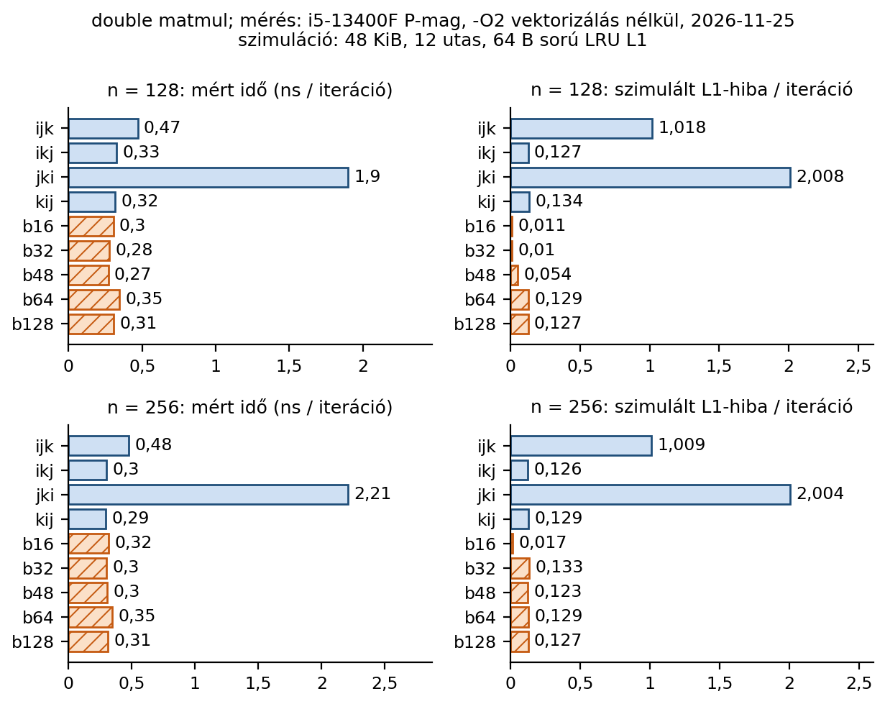

A labor gépén az
-es
double mátrixszorzás belső iterációja az ijk
ciklussorrenddel 1,87 ns, az ikj sorrenddel 0,28 ns, a
jki sorrenddel 5,38 ns (i5-13400F, P-mag, -O2
vektorizálás nélkül, 2026-11-25). Ugyanaz az algoritmus, ugyanannyi
szorzás és összeadás, a leggyorsabb és a leglassabb között mégis
tizenkilencszeres a különbség. Jó lenne mérés előtt tudni, melyik
változat lesz gyors, és ha lassú, miért.
Ehhez kétféle eszköz kell. A szimulátor megmondja, hány hibát okoz egy hozzáférési sorozat egy adott cache-ben; a mérés megmondja, mennyi időbe kerül ez a valódi gépen. Ez az alfejezet a kettőt összeköti, és azt is megmutatja, hol válnak el.
A munkafolyamat egy csővezeték: a kódból címnyom (a memóriahozzáférések időrendi listája) lesz, a nyomot a cache-modell lejátssza, a hibaszámból hipotézis születik, a mérés pedig ellenőrzi. A mátrixszorzásnál a fő ötlet a blokkosítás (tiling): a számítást kis téglalapokra daraboljuk, hogy egyszerre csak annyi adattal dolgozzunk, amennyi a cache-ben elfér.
Figyelje meg a felső sort: a naiv változatban a oszlopa nem fér el a 16 soros cache-ben, ezért mire a következő -nél visszatérünk az oszlop tetejére, az már kiesett. Az alsó sorban mindhárom mátrixból egy-egy blokk marad bent, és sokszor újrahasználjuk: 4096 iteráció végén 5184 helyett 576 hiba.
Definíció. A nyomvezérelt szimuláció (trace-driven simulation) a program memóriahozzáféréseinek sorozatát (cím, írás-e, méret) játssza le egy cache-modellen; a számítást nem végzi el, és az időt nem modellezi.
A nyom kétféleképpen születhet:
archkit.riscv gépe
futtatás közben rögzíti a betöltéseket és tárolásokat
(trace.mem_trace);matmul_trace,
fields_trace, …); ez gyorsabb és paraméterezhető.A munkafolyamat lépései:
A szimuláció és a mérés azért térhet el, mert a modell kihagyja a hardveres előbetöltést, a hibák átfedését a sorrenden kívüli magban, a címfordítást (TLB), a fizikai címek szerinti indexelést a nagyobb szinteken, a valódi cserepolitikát, a többi folyamatot és magát a számítást. A modell az irányról és a nagyságrendről tud megbízhatóan beszélni, nem az időről.
Továbbvitt eredmény. A nyomvezérelt cache-szimuláció
munkafolyamata (kérdés → nyom → modell a célgeometriával → jóslat →
mérés → az eltérés magyarázata) az archkit.cache-re épül;
ezt a A koherencia ára: ping-pong és false
sharing, a Cache-mellékcsatornák és a 2–3. záróprojekt: cache-szimulátor és
mikrobenchmark-sorozat használja tovább.
A matmul kernel
sorfolytonos
-es
mátrixokra. A Lokalitás és a memóriahierarchia
lépésköz-hatása alapján elég megnézni, mekkora lépésközzel halad a
legbelső ciklus az egyes mátrixokban, és ebből a
hiba/iteráció becsülhető 8 bájtos elemekkel, 64 bájtos sorral, nagy
-re:
| Sorrend | belső index | A | B | C | becsült hiba / iteráció |
|---|---|---|---|---|---|
ijk |
soros | oszlopos | állandó | ||
ikj |
állandó | soros | soros | ||
jki |
oszlopos | állandó | oszlopos |
A „soros” elérés nyolc iterációnként egy hibát ad, az „oszlopos”
iterációnként egyet, ha az oszlop sorai nem maradnak bent a következő
használatig, az „állandó” elem pedig regiszterben marad. Az
és
tagot a cache mérete csökkentheti: ikj-nél, ha a
egy sora elfér, csak a
hibái maradnak
().
A kij sorrend ugyanezt a belső ciklust futtatja, mint az
ikj, a jik az ijk-ét, a
kji a jki-ét: a belső ciklus a döntő, a két
külső sorrendje csak a kisebb tagokat mozgatja.
A blokkosított szorzás a három ciklust
méretű lépésekre bontja, és egy blokkhármas feldolgozása közben csak
-s
darabokhoz nyúl. A code/bench/bench_matmul.cpp változata
(itt csak a sortörés más):
for (size_t ii = 0; ii < n; ii += bs)
for (size_t kk = 0; kk < n; kk += bs)
for (size_t jj = 0; jj < n; jj += bs)
for (size_t i = ii; i < std::min(ii + bs, n); ++i)
for (size_t k = kk; k < std::min(kk + bs, n); ++k) {
const double r = a[i * n + k];
for (size_t j = jj; j < std::min(jj + bs, n); ++j) c[i * n + j] += r * b[k * n + j];
}Két feltételt kell teljesíteni. Kapacitás: a három blokk elférjen, , azaz
ahol az elemméret. A labor gépén ( KiB, ) ez . Ütközés: ha kettőhatvány, a blokk sorai a memóriában bájtonként követik egymást. Ha ez a sorméret egész számú többszöröse, és osztja a halmazok számát, akkor a blokk sorai csak halmazcsoportra jutnak, és csoportonként blokksor osztozik úton. Elférni akkor férnek, ha
Szavakban: a sok út sem segít, ha a blokk sorai néhány halmazba zsúfolódnak.
Aritmetikai intenzitás. Egy blokkhármas iterációt, azaz FLOP-ot végez, és nagyjából három blokkot ( bájtot) hoz be. A roofline-modell aritmetikai intenzitása tehát
vagyis a blokk növelésével egyenesen nő, amíg a blokk elfér. (Ez felső becslés a forgalomra, a visszaírása és az újrahasználat finomítja.)

Hasonlítsa össze a két oszlopot. A ciklussorrendek rangsora egyezik:
jki a legrosszabb, ijk a középső,
ikj/kij a jók. A blokkméreteknél
-ra
a 32–48-as blokk a legjobb mind a mérésben, mind (32) a szimulációban, a
64-es mindkettőben rossz.
-ra
viszont a 16-os blokk hétszer kevesebb L1-hibát okoz, mint a
blokkosítatlan ikj, a mérés szerint mégsem gyorsabb: az
ikj
-hibái
soros L2-találatok, ezeket az előbetöltés és az átfedés olcsóvá teszi, a
blokkosítás pedig maga is többletmunka.
Továbbvitt eredmény. A blokkosított
matmul:
-t
úgy választjuk, hogy
,
és a blokk sorai ne ütközzenek
();
a becsült intenzitás
FLOP/bájt (double). Erre épül a AVX és
NEON a gyakorlatban, a Szisztolikus tömbök és a
TPU-elv és az Esettanulmány: mérésvezérelt
optimalizálás.
A sorból csak a ténylegesen használt bájtok hasznosak. Egy részecskerendszer kétféleképpen tárolható:
struct P32 { float x, y, z, vx, vy, vz, mass, charge; }; // AoS: struktúrák tömbje
std::vector<P32> p(n);
// SoA: tömbök struktúrája
std::vector<float> x(n), vx(n);A bench_layout kernele csak az
x ← x + vx·dt lépést végzi, tehát elemenként 8 bájtot
olvas. AoS (array of structures) esetén egy 32 bájtos
elemből 8 hasznos (25%), 64 bájtosból 8 (12,5%); SoA
(structure of arrays) esetén a két használt tömb minden bájtja az. Ez a
sorhasználat a nagy méretekben egyenesen arányos a
memóriaforgalommal. Ha AoS marad: tegye egymás mellé az együtt használt
mezőket, a ritkán használtakat pedig külön struktúrába; az igazítás
(alignas(64)) akkor hasznos, ha egy elem ne lógjon át két
sorra, de a kitöltés a sorhasználatot ronthatja.
A mezők sorrendje a méretet is meghatározza, mert a fordító minden mezőt a saját igazítására tesz, és közé kitöltést (padding) szúr:
struct Rossz { char flag; double value; int id; }; // sizeof = 24 (x86-64, g++)
struct Jo { double value; int id; char flag; }; // sizeof = 16A nagyobb igazítású mezőt előre téve ugyanaz az adat harmadával kevesebb memóriát és cache-sort kíván.
Egy rokon gondolat a cache-agnosztikus (cache-oblivious) algoritmus: a mátrixot rekurzívan negyedeli, amíg kicsi nem lesz, így minden cache-szint méretére „magától” illeszkedik, anélkül hogy ismerné a méreteket. A könyv ezt csak megemlíti.
,
double, a labor L1-e:
KiB,
,
.
ikj: minden
-re
az egész
-t
(
sor, 128 KiB) végigjárjuk, amely nem fér el; tehát
-hiba,
vagyis
.A () a határon van: elvben elfér, de a másik két mátrix ugyanazokra a halmazokra pályázik.
Először ellenőrizzük, hogy a szintetikus nyom ugyanazt a címsorrendet adja, mint az értelmezőn futó RISC-V kernel (a kezdőcím eltolásától eltekintve):
import sys; sys.path.insert(0, "code")
from archkit import cache as C, riscv, trace
run = riscv.Machine(riscv.matmul_src(8, "ikj", block=4)).run()
rv = trace.mem_trace(run)
base = min(a.addr for a in rv)
syn = C.matmul_trace(8, "ikj", block=4, elem=4)
same = [(a.addr - base, a.is_write) for a in rv] == [(a.addr, a.is_write) for a in syn]
print(f"{len(rv)} hozzáférés, egyezik a szintetikus nyommal: {same}")2048 hozzáférés, egyezik a szintetikus nyommal: TrueNagy mátrixokra a matmul_trace több millió elemű listát
építene, ezért a matmul_misses menet közben állítja elő a
címeket (ugyanazt az LRU-modellt futtatja, a C++ kódhoz hasonlóan
regiszterben tartva a belső ciklusban állandó elemet). A kézi példa
-hibái:
L1 = dict(size=48 * 1024, block=64, ways=12)
for name, order, tile in (("ijk", "ijk", None), ("ikj", "ikj", None), ("jki", "jki", None),
("b = 32", "ikj", 32), ("b = 48", "ikj", 48), ("b = 64", "ikj", 64)):
r = C.matmul_misses(128, order=order, tile=tile, **L1)
print(f"{name:7}: {r['misses'] / r['inner']:6.3f} hiba/iteráció, B: "
f"{r['by_matrix']['B']:7}, összes: {r['misses']:7}")ijk : 1.018 hiba/iteráció, B: 2097152, összes: 2134560
ikj : 0.127 hiba/iteráció, B: 262144, összes: 266240
jki : 2.008 hiba/iteráció, B: 16384, összes: 4210688
b = 32 : 0.010 hiba/iteráció, B: 8192, összes: 21456
b = 48 : 0.054 hiba/iteráció, B: 101274, összes: 112270
b = 64 : 0.129 hiba/iteráció, B: 262144, összes: 270336A kézi számolás pontosan egyezik: 262 144 és 8192
-hiba,
a 64-es blokk pedig semmit sem nyer. A mért idők a
figures/data/ca048-matmul.csv-ből (-O2
vektorizálás nélkül, valamint -O3 -march=native):
from archkit import perf
meta, rows = perf.read_bench_csv("figures/data/ca048-matmul.csv")
ms = {(r["build"], r["order"], int(r["n"]), int(r["block"])): float(r["ns_per_inner"])
for r in rows}
print(" n ijk ikj b32 b128 [ns/iter, novec] | ikj native")
for n in (256, 512, 1024, 2048):
cell = lambda b, o, t: f"{ms[b, o, n, t]:6.3f}" if (b, o, n, t) in ms else " –"
print(f"{n:4} {cell('novec', 'ijk', 0)} {cell('novec', 'ikj', 0)} "
f"{cell('novec', 'blocked', 32)} {cell('novec', 'blocked', 128)}"
f" | {cell('native', 'ikj', 0)}") n ijk ikj b32 b128 [ns/iter, novec] | ikj native
256 0.477 0.297 0.298 0.309 | 0.102
512 1.874 0.284 0.302 0.310 | 0.124
1024 2.120 0.280 0.312 0.311 | 0.132
2048 – 0.395 0.316 0.319 | –A blokkosítás ezen a gépen csak
-nál
nyer: ott a három mátrix (96 MiB) messze nem fér az L3-ba, és az
ikj lelassul. Az okot A
roofline-modell mutatja meg. A blokkosítatlan ikj
ilyenkor a
-t
a DRAM-ból tölti, iterációnként 8 bájtot 2 FLOP-hoz:
.
A blokkos változat
-je
a
becslés szerint nagyságrenddel nagyobb:
_, bw = perf.read_bench_csv("figures/data/ca009-savszelesseg.csv")
beta = next(float(r["median_gbps"]) for r in bw if r["core"] == "P" and r["kernel"] == "read"
and int(r["array_bytes"]) == 256 << 20 and int(r["threads"]) == 1)
_, pk = perf.read_bench_csv("figures/data/ca009-csucs.csv")
pi = next(float(r["median_gflops"]) for r in pk if r["variant"] == "scalar_muladd"
and int(r["threads"]) == 1)
for name, I, key in (("ikj", 0.25, ("novec", "ikj", 2048, 0)),
("b32", 32 / 12, ("novec", "blocked", 2048, 32))):
roof = perf.roofline(I, pi * 1e9, beta * 1e9) / 1e9
print(f"{name}: I = {I:.2f}, tető {roof:5.2f} GFLOP/s, mért {2 / ms[key]:5.2f} GFLOP/s")
print(f"(π = {pi:.1f} GFLOP/s, β = {beta:.1f} GB/s, egy szál)")ikj: I = 0.25, tető 6.63 GFLOP/s, mért 5.07 GFLOP/s
b32: I = 2.67, tető 12.51 GFLOP/s, mért 6.33 GFLOP/s
(π = 12.5 GFLOP/s, β = 26.5 GB/s, egy szál)Az ikj a sávszélesség-tető közelében fut, a blokkosítás
kivitte a pontot a memóriakorlátos tartományból; ott azonban a következő
korlát a mag, ezért a nyereség csak 1,25-szörös. A native
oszlop mutatja, hogy a további gyorsulás vektorizálásból jön, de csak a
jó lokalitású sorrendben (az ijk natív változata
-nél
2,24 ns, nem gyorsabb a vektorizálatlannál).
Végül az adatelrendezés mért idői (elemenként, -O2
vektorizálás nélkül és -O3 -march=native):
_, lay = perf.read_bench_csv("figures/data/ca048-aos-soa.csv")
t = {(r["build"], r["variant"], int(r["elems"])): float(r["median_ns_per_elem"]) for r in lay}
for build in ("novec", "native"):
for n in (1024, 4194304):
print(f"{build:6} n = {n:8}: " + " ".join(
f"{v} {t[build, v, n]:.3f}" for v in ("aos32", "aos64", "soa")))novec n = 1024: aos32 0.227 aos64 0.840 soa 0.225
novec n = 4194304: aos32 1.733 aos64 3.506 soa 0.331
native n = 1024: aos32 0.956 aos64 0.835 soa 0.038
native n = 4194304: aos32 1.795 aos64 3.504 soa 0.235Nagy méretben (vektorizálás nélkül) a soa-hoz képest
5,2-, illetve 10,6-szoros az idő. Ez jól egyezik a forgalommal: AoS-nál
elemenként a teljes struktúrasort be kell hozni és (az x
írása miatt) vissza is kell írni, 64, illetve 128 bájtot, SoA-nál csak
12-t (x olvasás és írás, vx olvasás), tehát a
várt arány 5,3 és 10,7. Kis méretben meglepő: a vektorizált
aos32 lassabb a skalárnál. A
g++ -O3 -march=native -S kimenet szerint a fordító nyolc
elemenként hosszú vpermd/vblendps átrendező
sorozattal gyűjti össze az x mezőket, majd egyenként írja
vissza őket; az aos64 változat skalár maradt, az
soa pedig háromutasításos tiszta vektorciklus. Az
autovektorizálás tehát AoS-on árthat is; mérje meg, mielőtt hinne
neki.
ikj-re.
Mennyit nyer itt a blokkosítás, és miért kevesebbet?bench_matmul ok
oszlopa ezt teszi).1. (A) Egy 32 KiB-os L1-re float
mátrixokhoz mekkora a legnagyobb
a
feltétel szerint?
2. (A) Egy 48 bájtos struktúrából két
float mezőt olvasunk egy ciklusban. Mekkora a sorhasználat
AoS és SoA tárolásnál?
3. (B)
,
double, a labor L1-e. A kézi példa módján jósolja meg a
-hibák
számát
és
blokkra, majd ellenőrizze matmul_misses-szel.
4. (B) Egy gépen GB/s, GFLOP/s. Mekkora a tető -nál és -nél? Melyik pont számítási korlátos?
5. (C, programozós)
-es
blokkosított (ikj,
)
szorzás egy 12 KiB-os, 12 utas, 64 bájtos sorú cache-ben: írjon
nyomgenerátort, amelyben a mátrixok sorhossza
(,
leading dimension) paraméter, és hasonlítsa össze
és
hibaszámát. Magyarázza meg az eredményt.
6. (C, mérős) Fordítsa le a
bench_layout.cpp-t
-O3 -march=native -S -masm=intel kapcsolókkal, és keresse
meg a step_aos<P32> és a step_soa
függvényt. Mi a különbség a belső ciklusban?
A nyomvezérelt szimuláció a címsorozatot játssza le a cache-modellen;
a hibaszám irányt és nagyságrendet jósol, időt nem, mert kimarad belőle
az előbetöltés, az átfedés és a TLB. A matmul
ciklussorrendjét a belső ciklus lépésközei döntik el (ikj
jó, jki rossz). A blokkosításnál
és a halmazütközés
()
korlátoz; az intenzitás
FLOP/bájt körül nő. A labor gépén a sorrend 6,6-szoros, a blokkosítás
csak
-nál
1,25-szörös gyorsulást adott, mert az ikj utána a mag
tetejébe ütközik. Az adatelrendezésben a sorhasználat dönt: SoA a
használt mezőknek, és a vektorizálás hatását mindig ellenőrizni
kell.
1. .
2. AoS: egy 48 bájtos elemből 8 bájt hasznos, . SoA: a két használt tömb teljes sorai hasznosak, 100%.
3. Sorhossz bájt, , csoport. : , elfér; blokkhármas , mindegyik 16 sor × 2 cache-sor hiba: . : , thrashing: .
for b in (16, 32):
r = C.matmul_misses(256, order="ikj", tile=b, **L1)
print(f"b = {b}: B-hiba {r['by_matrix']['B']}")b = 16: B-hiba 131072
b = 32: B-hiba 20971524. : GFLOP/s, memóriakorlátos. : , számítási korlátos (a gerincpont ).
5. A nyom a C++ blokkos kódot követi, a
ld a sorlépés elemben:
def blocked_ld(n, b, ld, e=8):
A, B, Cm = 0, ld * n * e, 2 * ld * n * e
out = []
for ii in range(0, n, b):
for kk in range(0, n, b):
for jj in range(0, n, b):
for i in range(ii, ii + b):
for k in range(kk, kk + b):
out.append((A + (i * ld + k) * e, False, e))
for j in range(jj, jj + b):
out.append((B + (k * ld + j) * e, False, e))
out.append((Cm + (i * ld + j) * e, False, e))
out.append((Cm + (i * ld + j) * e, True, e))
return out
for ld in (64, 72):
s = C.Cache(12 * 1024, 64, 12).run(blocked_ld(64, 32, ld))
print(f"ld = {ld}: hiba {s.misses}")ld = 64: hiba 34816
ld = 72: hiba 307212 KiB, 12 út: . -nél , 2 halmazcsoport, a blokk 32 sora csoportonként 16 – több, mint 12: ütközés. -nél , relatív prím a 16-hoz, a sorok minden halmazt használnak. A kitöltés soronként 64 bájtnyi helypazarlással tizenegyed részére csökkenti a hibákat.
6. A step_soa ciklusa három utasítás:
vmovups betöltés, vfmadd213ps a
memóriaoperandussal, vmovups tárolás, 32 bájtonként előre.
A step_aos<P32> egy menetben nyolc elemet dolgoz fel:
több vmovups betöltés után hosszú
vpermd/vblendps sorozat rendezi a mezőket egy
regiszterbe, és az eredményt egyenként (vmovss,
vextractps) írja vissza. (A pontos utasítások a fordító
verziójától függnek.)